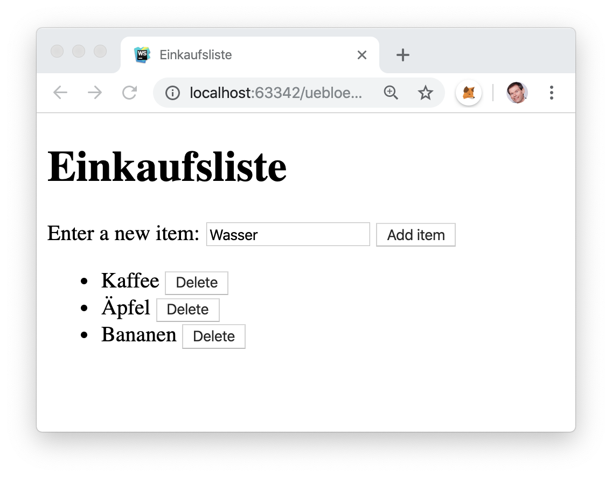
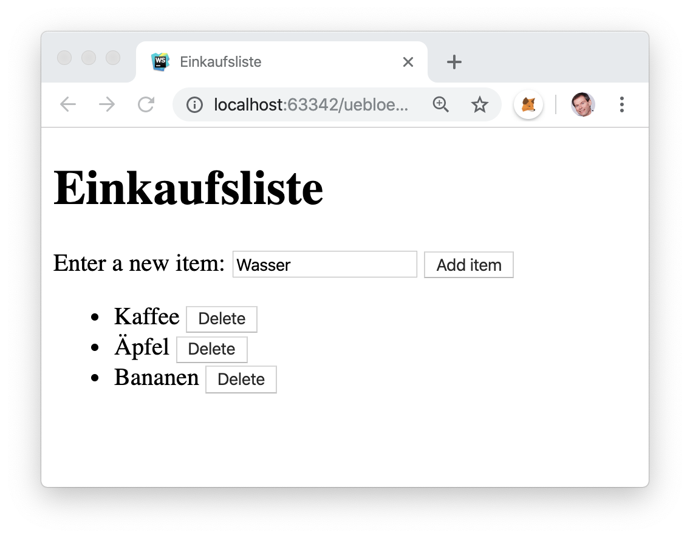
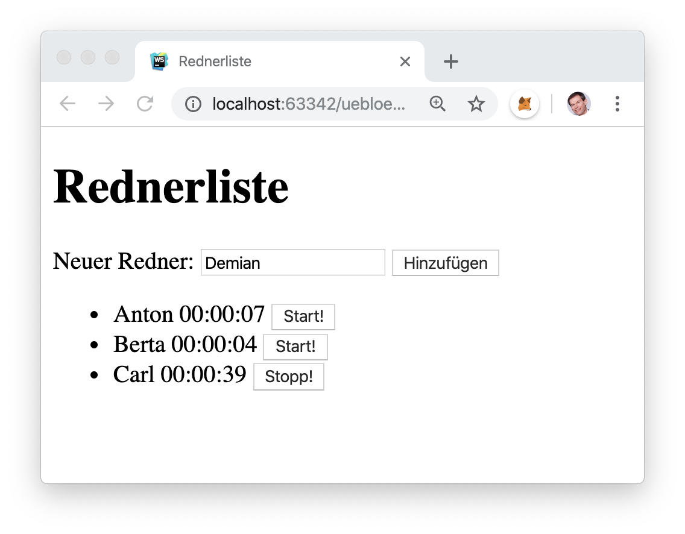
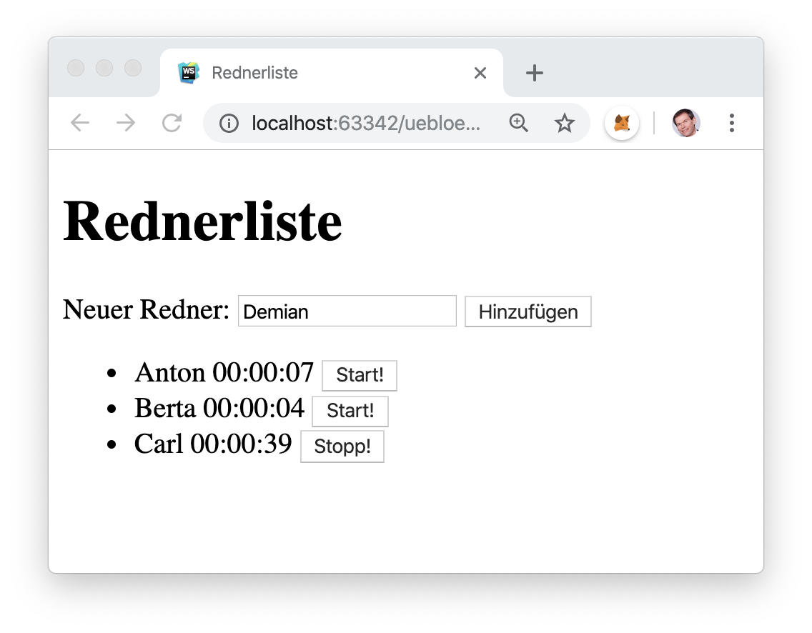

5. Document Object Model (DOM)
Inhalt:
Lernziele:
Literatur, Tutorials und Kurse:
Mögliche Klausuraufgaben:
- Browser-Architektur erläutern können.
- Grundlegenden Ablauf des Renderings erläutern können.
- Document Object Model (DOM)-Konzepte erläutern können.
- JavaScript-Programme zur DOM-Manipulation lesen können.
- JavaScript-Programme zur DOM-Manipulation selbst erstellen können.
- Unterschiede zwischen innerHTML, innerText, textContent und outerHTML erklären können.
-
Ergänzen Sie folgende HTML-Seite so, dass die Anzeige der Anzahl der Klicks auf den Button dynamisch aktualisiert wird, ohne den vorgegebenen HTML-Code zu verändern: Sie dürfen lediglich JavaScript hinzufügen. Dabei soll die Anzeige der Anzahl in der gleichen Zeile erfolgen wie der Text " Anzahl Klicks = ".
<button>Click me!</button>
<h2>Anzahl Klicks = </h2>
<h1></h1>
<script>
...
</script>
Arbeiten Sie das W3Schools-Tutorial zu DOM API durch. Nutzen Sie das dort eingebaute "Try it Yourself" für eigene Experimente.
Implementieren Sie die interaktive Anwendung "Einkaufsliste" selbstständig in JavaScript durch Nutzung der DOM API. Jeder Punkt auf der Einkaufsliste soll sich indiviiduell löschen lassen.


Implementieren Sie die interaktive Anwendung "Rednerliste mit Zeitmessung" selbstständig in JavaScript durch Nutzung der DOM API und der Timer-Funktionen. Neue Redner sollen auf Knopfdruck hinzugefügt werden können. Deren Uhr wird dann sofort automatisch gestartet und alle anderen Uhren angehalten. Bei jedem Redner soll die individuelle, gemessene Redezeit sekundengenau angezeigt werden. Für jeden Redner soll es einen eigenen Start-/Stopp-Button geben. Es soll immer nur eine Uhr laufen. Angezeigt werden sollen die bisherigen Summenzeiten aller Redebeiträge der betreffenden Person.


Implementieren Sie Performanzmessungen zum Vergleich von innerHTML, innerText, textContent und outerHTML selbstständig in JavaScript durch Nutzung der DOM API. Geben Sie die Messergebnisse als Tabelle aus. Verwenden Sie die eingebauten Zeitmess-Funktionen Date.now oder performance.now. Suchen Sie eine möglichst kurze und elegante Lösung.